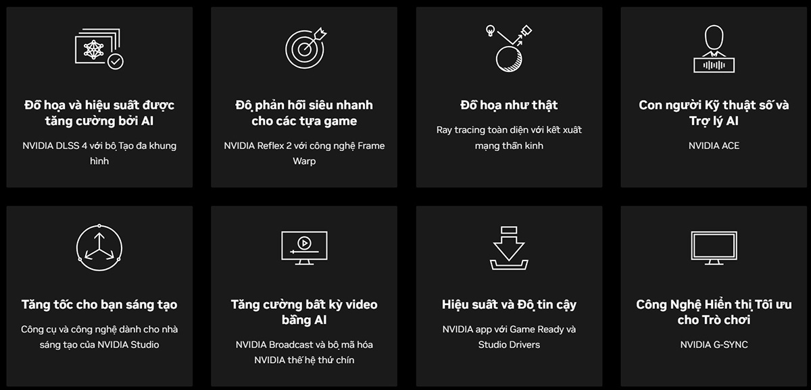
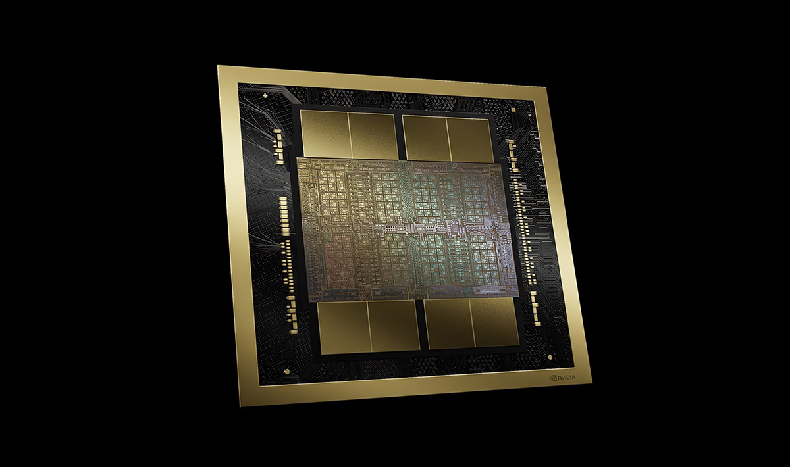
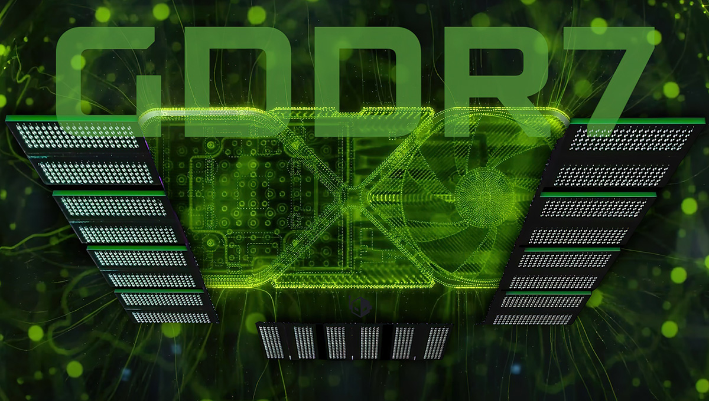
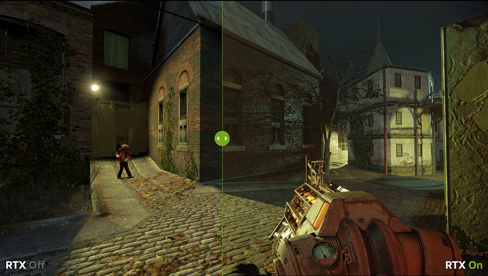
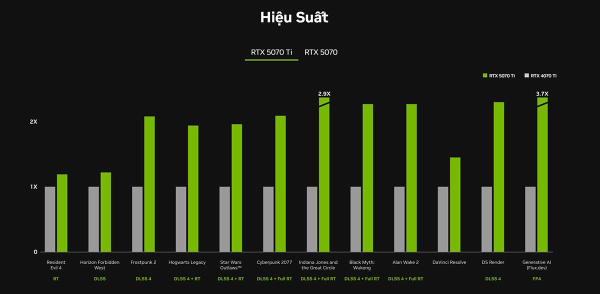
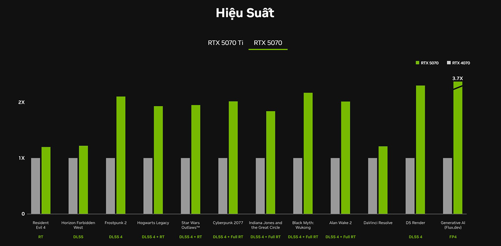
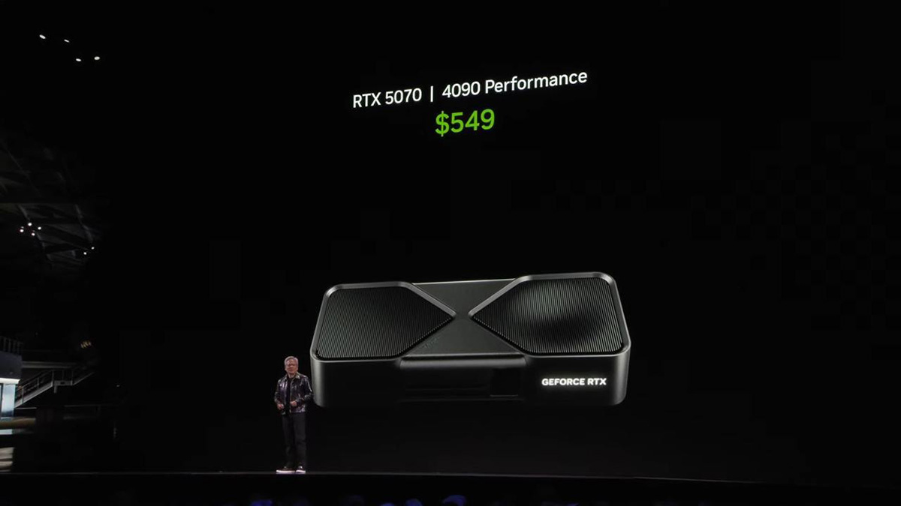
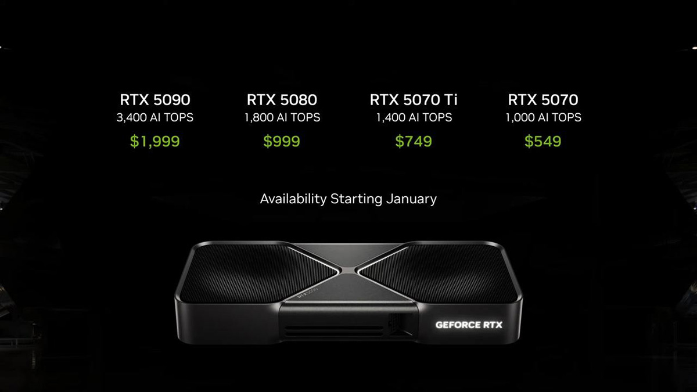
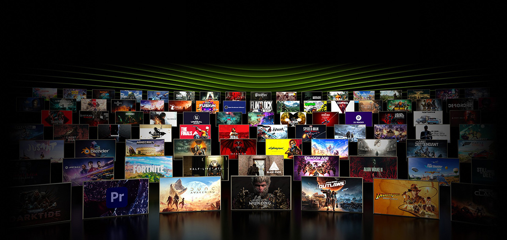

NVIDIA RTX 5070 Ti và RTX 5070 có gì mới? Giá bao nhiêu? Hiệu năng ra sao?
NVIDIA RTX 5070 Ti và RTX 5070 có gì mới, có những nâng cấp gì đáng chú ý, giá bao nhiêu và liệu có đáng mua, hãy cùng "TLH Tech" tìm hiểu trong bài viết này nhé.
Được định vị là "Game Changer" – kẻ thay đổi cuộc chơi, bộ đôi RTX 5070 Ti và RTX 5070 hứa hẹn mang đến hiệu năng đột phá nhờ kiến trúc NVIDIA Blackwell hoàn toàn mới, tối ưu cho cả game thủ đam mê tốc độ và những nhà sáng tạo nội dung chuyên nghiệp. Hãy cùng tìm hiểu xem dòng card đồ họa cao cấp mới này của NVIDIA có những gì đáng chú ý và hấp dẫn người dùng.
1. Tổng quan về NVIDIA RTX 5070 Ti và RTX 5070
NVIDIA RTX 5070 Ti và RTX 5070 đã chính thức được công bố tại CES 2025 với một số nâng cấp đáng chú ý bao gồm nhiều nhân CUDA hơn, bộ nhớ GDDR7 và đặc biệt là sức mạnh AI được nâng cấp vượt trội so với thế hệ trước. Kết hợp với DLSS 4, dòng RTX 5070 hứa hẹn mang đến trải nghiệm chơi game vượt trội.
Tại sự kiện CES 2025, CEO Jensen Huang của NVIDIA đã tuyên bố rằng RTX 5070 sẽ mang lại "hiệu suất tương đương RTX 4090 với mức giá 549 USD". Tuy nhiên, điều này có thể đạt được nhờ những cải tiến của công nghệ DLSS 4, chứ không phải hoàn toàn do hiệu năng xử lý thuần túy của card.
2. NVIDIA RTX 5070 Ti và RTX 5070 có gì mới
Dòng RTX 5070 được xây dựng trên nền tảng kiến trúc Blackwell hoàn toàn mới và tích hợp hàng loạt công nghệ tiên tiến, đặc biệt là trong lĩnh vực trí tuệ nhân tạo (AI) và xử lý đồ họa.
Kiến trúc NVIDIA Blackwell và thông số kỹ thuật
Nền tảng sức mạnh của RTX 5070 series chính là kiến trúc Blackwell, mang đến những cải tiến cốt lõi so với thế hệ Ada Lovelace trước đó. Các trụ cột chính của kiến trúc này bao gồm nhân Tensor thế hệ thứ 5, được tối ưu cho hiệu năng AI tối đa, hỗ trợ định dạng dữ liệu FP4 và cung cấp khả năng xử lý cho DLSS 4.
Bên cạnh đó là các Streaming Multiprocessors - SM mới, được tối ưu hóa đặc biệt cho các shader thần kinh (neural shaders), một công nghệ đồ họa mới đầy hứa hẹn. Cuối cùng là Nhân Ray Tracing (RT) thế hệ thứ 4, được thiết kế để xử lý hiệu quả các hình học cực kỳ phức tạp (Mega Geometry), nâng cao hiệu năng và chất lượng của hiệu ứng dò tia trong game.
Về thông số bộ nhớ, dòng RTX 5070 có sự nâng cấp đáng kể. Phiên bản RTX 5070 Ti được trang bị 16GB bộ nhớ GDDR7, đạt băng thông bộ nhớ ấn tượng lên đến 896 GB/giây. Phiên bản RTX 5070 tiêu chuẩn cũng không hề kém cạnh với 12GB bộ nhớ GDDR7, đạt băng thông 672 GB/giây

So với thế hệ trước như RTX 4070 (chỉ có 12GB GDDR6/6X và băng thông 504 GB/s), cả hai mẫu 5070 mới đều cung cấp băng thông bộ nhớ vượt trội hơn hẳn, giúp xử lý tốt hơn các game và ứng dụng đòi hỏi nhiều tài nguyên bộ nhớ. Ngoài ra, chúng còn được trang bị bộ giải mã video NVDEC thế hệ thứ 6 và bộ mã hóa video NVENC thế hệ thứ 9 (với 5070 Ti có 2 bộ mã hóa), giúp tăng tốc các tác vụ liên quan đến video.
Loạt công nghệ AI và đồ họa đột phá
Kiến trúc Blackwell và các nhân xử lý thế hệ mới là nền tảng cho hàng loạt công nghệ đồ họa và AI tiên tiến được tích hợp trên dòng RTX 5070. Công nghệ nổi bật nhất chắc chắn là NVIDIA DLSS 4. Đây là một bộ công nghệ render thần kinh phức tạp, sử dụng trí tuệ nhân tạo để tăng tốc độ khung hình (FPS), giảm độ trễ và cải thiện chất lượng hình ảnh.
Phiên bản mới nhất này bao gồm các thành phần như Super Resolution (Siêu phân giải) được cải tiến, Ray Reconstruction (Tái tạo tia) nâng cao và đặc biệt là Multi Frame Generation (Tạo đa khung hình), có khả năng tạo ra tới 3 khung hình nội suy giữa các khung hình gốc, giúp FPS tăng vọt.
Kiến trúc Blackwell cũng mở khóa khả năng xử lý Ray Tracing toàn phần (full ray tracing) với tốc độ chưa từng có. Nhờ nhân RT thế hệ 4 và các công nghệ render thần kinh được tăng tốc bởi nhân Tensor thế hệ 5, người dùng có thể trải nghiệm chất lượng hình ảnh chân thực như phim ảnh ngay trong game.
Đối với game thủ, công nghệ NVIDIA Reflex 2 giúp tối ưu hóa toàn bộ quy trình xử lý đồ họa để giảm thiểu độ trễ hệ thống, mang lại lợi thế về tốc độ phản xạ và độ chính xác khi ngắm bắn. Phiên bản Reflex 2 còn giới thiệu tính năng Frame Warp (sắp ra mắt), hứa hẹn giảm độ trễ hơn nữa.
Ngoài ra, dòng RTX 5070 còn hỗ trợ các công nghệ AI khác như NVIDIA ACE để tạo ra các nhân vật kỹ thuật số và trợ lý AI sống động. Nền tảng NVIDIA Studio với bộ công cụ và driver chuyên biệt giúp tăng tốc hiệu năng trong các ứng dụng sáng tạo hàng đầu như chỉnh sửa video, render 3D, thiết kế đồ họa.
Ứng dụng NVIDIA Broadcast sử dụng AI để nâng cao chất lượng livestream, voice chat, video call. Công nghệ RTX Video dùng AI để tự động nâng cấp chất lượng video khi xem trên trình duyệt. Công cụ RTX Remix cho phép cộng đồng modder dễ dàng làm lại các tựa game kinh điển với đồ họa RTX hiện đại.
Hiệu năng RTX 5070 & 5070 Ti
Trang web của NVIDIA có cung cấp một biểu đồ so sánh hiệu năng tương đối giữa RTX 5070 Ti và RTX 4070 Ti. Biểu đồ này được thực hiện ở độ phân giải 1440p, thiết lập đồ họa tối đa, và bật các công nghệ DLSS Super Resolution, Ray Reconstruction, Frame Generation (trên 40 series), Multi Frame Generation 4X (trên 50 series).
Kết quả từ biểu đồ cho thấy RTX 5070 Ti mang lại mức tăng hiệu năng rất lớn so với RTX 4070 Ti khi tận dụng tối đa các công nghệ AI mới nhất. Mặc dù không có con số FPS cụ thể, sự cách biệt về chiều dài cột biểu đồ là rất rõ ràng. Tuy nhiên, cần lưu ý rằng mức tăng hiệu năng "khủng" này có sự đóng góp rất lớn từ Multi Frame Generation 4X, và hiệu năng gốc (native performance) có thể sẽ không chênh lệch nhiều đến vậy.
NVIDIA cũng minh họa sức mạnh công nghệ bằng hình ảnh từ Cyberpunk 2077 chạy trên RTX 5090 (một GPU cao cấp hơn) với thiết lập Ray Tracing Overdrive, DLSS và MFG 4X, cho thấy khả năng đạt được FPS rất cao ngay cả với các thiết lập đồ họa nặng nhất. Điều này thể hiện tiềm năng của bộ công nghệ trên kiến trúc Blackwell nói chung .
3. So sánh NVIDIA RTX 5070 Ti và RTX 5070
Về mặt cấu hình, RTX 5070 Ti sở hữu 8960 CUDA core và 16GB GDDR7, trong khi RTX 5070 có 6144 CUDA core và 12GB GDDR7. Sự khác biệt này dẫn đến hiệu năng xử lý của RTX 5070 Ti nhỉnh hơn, phù hợp với game thủ ưu tiên chơi game ở thiết lập đồ họa cao hoặc các tác vụ đồ họa chuyên nghiệp.

Ngoài ra, RTX 5070 Ti cũng sở hữu hiệu suất AI cao hơn tới 40% kết hợp VRAM nhiều hơn, đây sẽ là mẫu card đồ họa tuyệt vời để chạy các mô hình AI với chi phí phải chăng hơn nhiều so với RTX 5080 hay 5090 cao cấp.
Mặc dù vậy, RTX 5070 vẫn là một lựa chọn đáng cân nhắc với hiệu năng tốt trong tầm giá, đặc biệt là với game thủ. Với công nghệ tạo khung hình, NVIDIA cho biết khả năng chơi game của RTX 5070 thậm chí ngang với RTX 4090 nhờ DLSS 4.
4. Bảng thông số kỹ thuật NVIDIA RTX 5070 Ti và RTX 5070
| Thông số | NVIDIA GeForce RTX 5070 Ti | NVIDIA GeForce RTX 5070 |
|---|---|---|
| Tên GPU | Blackwell GB203-300-A1 | Blackwell GB205-300-A1 |
| GPU SM | 70 (84 Đầy đủ) | 50 (50 SM Đầy Đủ) |
| Lõi GPU | 8960 (+16%) | 6144 |
| Dung lượng bộ nhớ | 16GB GDDR7 | 12GB GDDR7 |
| Bus bộ nhớ | 256-bit | 192-bit |
| Tốc độ bộ nhớ | 28Gbps | 28Gbps |
| Băng thông | 896GB/giây | 672GB/giây |
| Giao diện nguồn | 1 12V-2×6 (16 chân) | 1 12VHPWR (16 chân) |
| Giá bán tham khảo | 749 USD (gần 19 triệu) | 549 USD (gần 14 triệu) |
5. NVIDIA RTX 5070 Ti và RTX 5070 ra mắt khi nào, giá bao nhiêu
NVIDIA RTX 5070 Ti và RTX 5070 cùng với NVIDIA RTX 5080 và RTX 5090 đã chính thức được NVIDIA giới thiệu tại CES 2025 diễn ra vào 9h sáng ngày 07/01/2025 (giờ Việt Nam).
Về giá bán lẻ đề xuất (MSRP) tại thị trường quốc tế, NVIDIA đã công bố mức giá khởi điểm khá rõ ràng. Cụ thể, GeForce RTX 5070 Ti sẽ có giá bắt đầu từ 749 USD, tương đương khoảng 18.7 triệu đồng.
Phiên bản GeForce RTX 5070 sẽ có giá khởi điểm thấp hơn, từ 549 USD, tương đương khoảng 13.7 triệu đồng. Mức giá này đặt dòng 5070 vào phân khúc cao cấp, hướng đến người dùng yêu cầu hiệu năng mạnh mẽ. Cần lưu ý rằng đây chỉ là giá đề xuất, giá bán lẻ thực tế có thể thay đổi tùy thuộc vào thị trường và các hãng sản xuất card đồ họa đối tác (AIB).
Về thời gian mở bán, hai phiên bản cao cấp 5090 và 5080 được mở bán trước vào khoảng cuối tháng 1 - đầu tháng 2. Trong khi đó RTX 5070 Ti và RTX 5070 được mở bán sau, vào khoảng tháng 2 hoặc đầu tháng 3/2025. Mặc dù đã được mở bán nhưng hiện tại nguồn hàng vẫn chưa dồi dào và mức giá cao hơn đáng kể so với giá đề xuất.
6. Có nên mua NVIDIA RTX 5070 Ti và RTX 5070?
RTX 5070 Ti và RTX 5070 là hai lựa chọn card đồ họa thuộc phân khúc hiệu năng cao, hướng đến người dùng chơi game ở độ phân giải 1440p, thực hiện các tác vụ đồ họa chuyên sâu hoặc chạy các mô hình AI cá nhân.
RTX 5070 Ti với cấu hình mạnh mẽ hơn, bộ nhớ lớn hơn và hiệu năng AI mạnh mẽ sẽ phù hợp với những ai ưu tiên hiệu năng xử lý cao, đặc biệt trong các ứng dụng đồ họa đòi hỏi nhiều tài nguyên và AI.
RTX 5070 cung cấp hiệu năng tốt trong tầm giá, đặc biệt là DLSS 4 mang đến mức fpt siêu cao, lý tưởng cho các game thủ muốn trải nghiệm các tựa game một cách mượt mà với độ phân giải cao mà không phải chi quá nhiều tiền.
Việc lựa chọn giữa hai mẫu card này còn phụ thuộc vào các yếu tố như ngân sách, cấu hình hệ thống hiện tại và nhu cầu sử dụng của mỗi người.
Tạm kết
RTX 5070 Ti và RTX 5070 là mẫu card đồ họa cực kỳ đáng chú ý đến từ NVIDIA, mang đến những cải tiến đáng kể về hiệu năng và công nghệ. Với mức giá khá hợp lý, bộ đôi này dự kiến sẽ thu hút sự quan tâm của nhiều người dùng trong thời gian tới.
Ngày: 01/05/2025